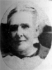
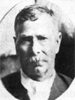
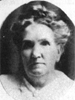
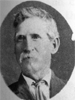
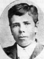
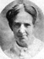
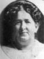
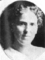

Jared Curtis and Lovisa Jenne Roundy Family
Home
Histories
Charts
Photos
Maps
Restricted
News
Info
Contact
 symbol is a link to a history, and the chart
symbol is a link to a history, and the chart  symbol is a link to a family group chart.)
symbol is a link to a family group chart.)| <--(return)-- |   | Shadrach Roundy and Betsy Quimby |
----> |  
| Jared Curtis Roundy and Lovisa Jenne |
 |
Evalyn Aurelia Roundy 23 Nov. 1852 - 11 Mar. 1930 Married Lucius Augustus Peck 23 Nov. 1869 The 1st child of Jared Curtis Roundy and Lovisa Jenne |
|  |
Jared Curtis Roundy, Jr. 13 Mar. 1855 - 16 Dec. 1924 Married Alice Jane Apgood 15 Nov. 1878 The 2nd child of Jared Curtis Roundy and Lovisa Jenne |
|  |
Sarah Lovisa Roundy 17 Jan. 1858 - 29 Oct. 1941 Married Joseph Phillips 1 Jan. 1876 The 3rd child of Jared Curtis Roundy and Lovisa Jenne |
|  |
Shadrach Jenne Roundy 9 Feb. 1860 - 20 Mar. 1914 Married Sarah Ann Edgel 17 Mar. 1887 The 4th child of Jared Curtis Roundy and Lovisa Jenne |
|  | George Snyder Roundy 10 Oct. 1862 - 22 Mar. 1892
The 5th child of Jared Curtis Roundy and Lovisa Jenne |
|  |
Ida May Roundy 14 Oct. 1864 - 1935 Married John Snyder 1880 The 6th child of Jared Curtis Roundy and Lovisa Jenne |
|  |
Roseanna Roundy 22 Dec. 1867 - 2 Jan. 1952 Married Edward George Gibbons 14 Apr. 1896 The 7th child of Jared Curtis Roundy and Lovisa Jenne |
| * | Franklin Spencer Roundy 3 Oct. 1870 - 24 Jan. 1871
The 8th child of Jared Curtis Roundy and Lovisa Jenne |
|  |
Maude Serene Roundy 7 July 1875 - 27 July 1961 Married John Thomas Thompson 23 Oct. 1896 The 9th child of Jared Curtis Roundy and Lovisa Jenne |
Back to Buchanan Family History web pages.